#1082: Removing values from the API field Negative from AK, CA, DC, GA, KY, NY, OH, OR, TX, VA and WA
Issue number 1082
jaclyde opened this issue on January 27, 2021, 3:13 PM PST
Labels Data quality
States: Alaska, California, Washington DC, Georgia, Kentucky, New York, Ohio, Oregon, Texas, Virginia, Washington
Issue: We are removing negatives that were created from mixed units (specimens minus cases or test encounters minus cases) for states that are using explicit totals in our main total test results field (called totalTestResults in the API). See the Data FAQ for additional explanation.
Comments
California: Never reported negatives directly, but did report in Total tests (people) until April 21, 2020. Removing time series from present to April 22, 2020.
Values Removed: Changes.txt
Washington DC: Never reported negatives directly, and has always reported encounters, removing total time series
Values Removed: Changes.txt
Georgia: Never reported negatives directly and always reported in specimens, removing total time series
Values Removed: Changes.txt
Kentucky: Never reported negatives directly and always reported in specimens, removing total time series
Values Removed: Changes.txt
New York: Never reported negatives directly and always reported in encounters, removing total time series
Values Removed: Changes.txt
Ohio: Never reported negatives directly and always reported in specimens, removing total time series
Values Removed: Changes.txt
Oregon: Never reported negatives directly, but did report in Total tests (people) until December 1, 2020. Removing time series from present to December 2, 2020.
Values Removed: Changes.txt
Texas: Never reported negatives directly and always reported in specimens, removing total time series
Values Removed: Changes.txt
Virginia: Never reported negatives directly and always reported in encounters, removing total time series
Values Removed: Changes.txt
Washington: Negatives were backfilled with values calculated from total tests (encounters)-confirmed cases in August 2020. Removing total time series.
Values Removed: Changes.txt
#1082: Removing values from the API field Negative from AK, CA, DC, GA, KY, NY, OH, OR, TX, VA and WA
Issue number 1082
jaclyde opened this issue on January 27, 2021, 3:13 PM PST
Labels Data quality
States: Alaska, California, Washington DC, Georgia, Kentucky, New York, Ohio, Oregon, Texas, Virginia, Washington
Issue: We are removing negatives that were created from mixed units (specimens minus cases or test encounters minus cases) for states that are using explicit totals in our main total test results field (called totalTestResults in the API). See the Data FAQ for additional explanation.
Comments
Alaska: Never reported negatives directly and always reported in specimens, removing total time series
Values Removed: Changes.txt
California: Never reported negatives directly, but did report in Total tests (people) until April 21, 2020. Removing time series from present to April 22, 2020.
Values Removed: Changes.txt
Washington DC: Never reported negatives directly, and has always reported encounters, removing total time series
Values Removed: Changes.txt
Georgia: Never reported negatives directly and always reported in specimens, removing total time series
Values Removed: Changes.txt
Kentucky: Never reported negatives directly and always reported in specimens, removing total time series
Values Removed: Changes.txt
New York: Never reported negatives directly and always reported in encounters, removing total time series
Values Removed: Changes.txt
Ohio: Never reported negatives directly and always reported in specimens, removing total time series
Values Removed: Changes.txt
Oregon: Never reported negatives directly, but did report in Total tests (people) until December 1, 2020. Removing time series from present to December 2, 2020.
Values Removed: Changes.txt
Texas: Never reported negatives directly and always reported in specimens, removing total time series
Values Removed: Changes.txt
Virginia: Never reported negatives directly and always reported in encounters, removing total time series
Values Removed: Changes.txt
Washington: Negatives were backfilled with values calculated from total tests (encounters)-confirmed cases in August 2020. Removing total time series.
Values Removed: Changes.txt
#1062: [VA] Backfill antigen and antibody testing from state dataset
Issue number 1062
space-buzzer opened this issue on January 12, 2021, 12:02 PM PST
Labels Data quality
Target Date: Backfilling data from as far back as Jan-26th, 2020 Overview: Antigen and antibody totals and positive encounters, will be filled in the specimens fields.
Comments
The antigen testing goes back to Jan-26th, 2020. This is very early for antigen testing. We're filling the data now as it appears in the dataset, and will send a question to the state about the data. Multi-edit tool-PRODUCTION - VA-reb-20210112_post.csv.txt Multi-edit tool-PRODUCTION - VA-reb-20210112.csv.txt
This issue has been automatically marked as stale because it has not had recent activity. It will be closed if no further activity occurs. Thank you for your contributions!
This was done
#1062: [VA] Backfill antigen and antibody testing from state dataset
Issue number 1062
space-buzzer opened this issue on January 12, 2021, 12:02 PM PST
Labels Data quality
Target Date: Backfilling data from as far back as Jan-26th, 2020 Overview: Antigen and antibody totals and positive encounters, will be filled in the specimens fields.
Comments
The antigen testing goes back to Jan-26th, 2020. This is very early for antigen testing. We're filling the data now as it appears in the dataset, and will send a question to the state about the data. Multi-edit tool-PRODUCTION - VA-reb-20210112_post.csv.txt Multi-edit tool-PRODUCTION - VA-reb-20210112.csv.txt
This issue has been automatically marked as stale because it has not had recent activity. It will be closed if no further activity occurs. Thank you for your contributions!
This was done
#1013: [VA] Add antibody and antigen tests to tracking
Issue number 1013
karaschechtman opened this issue on December 13, 2020, 11:34 AM PST
Labels Data quality
State or US: VA
Describe the problem VA added antibody testing encounters data and antigen test encounters that we're not capturing on 11/23. (We didn't capture the antigen because we were unsure about lumping with antibody) We can get historical data for it. https://www.vdh.virginia.gov/content/uploads/sites/182/2020/11/VDH-Antibody-Test-Reporting-Insights.pdf
Link to data source https://www.vdh.virginia.gov/coronavirus/coronavirus/covid-19-in-virginia-testing/ https://data.virginia.gov/resource/3u5k-c2gr.json
Comments
This issue has been automatically marked as stale because it has not had recent activity. It will be closed if no further activity occurs. Thank you for your contributions!
This issue has been closed because it was stale for 15 days, and there was no further activity on it for 10 days. You can feel free to re-open it if the issue is important, and label it as "not stale."
Done in Issue 1062
#990: [VA] Backfill our entire cumulative hospitalizations timeseries to better align with Virginia's reporting
Issue number 990
hmhoffman opened this issue on December 2, 2020, 9:31 AM PST
State: VA
Dates affected: 3/19-12/1
Describe the issue: On April 26, 2020, we began reporting Virginia's Ever hospitalized as calculated from {"Combined number of confirmed positive COVID-19..." + "...discharged"} from the official Virginia Hospital and Healthcare association public dashboard. On December 2, 2020, we revised out time series of Virginia's Ever hospitalized to align with what the state reports on the state dashboard.
Comments
#931: [VA] bad cumulative icu and on-ventilator cumulative numbers at the beginning of April
Issue number 931
space-buzzer opened this issue on November 5, 2020, 4:05 PM PST
Labels Data quality

Comments
Dup of https://github.com/COVID19Tracking/issues/issues/930
#930: [VA] Remove one-time cumulative vent and icu numbers from reporting
Issue number 930
muamichali opened this issue on November 5, 2020, 3:32 PM PST
Labels Data quality
State or US: Virginia
Describe the problem This is a number that was retrieved once from reporting and carried for one week https://www.facebook.com/GovernorVA/videos/218402129225741/ reporting an errant cumulative number for one week is skewing the national numbers. We should either remove the numbers, or carry them forward.
Link to data source

Additionally, VA has a 4 day gap in cumulative hospitalizations: 2020-04-14 - 2020-04-11
Comments
This is updated: the values in cumulative ICU and cumulative on ventilator were deleted
Similarly, fix a 4-day gap in in cumulative hospitalized between 2020-04-11 and 2020-04-14
#857: [VA] Remove antibody totals and positive captured. Outreach to VA indicates that they might contain antigen
Issue number 857
muamichali opened this issue on September 22, 2020, 7:25 AM PDT
Labels Data quality
State or US: Virginia
Describe the problem Virginia provides total tests encounters and PCR test encounters. We relied on previous outreach and were using the difference between the two numbers as antibody positives & totals, but based on recent outreach it appears that this number might also contain antigen tests, so we have to delete the previous capture.
Action Plan Remove time-series of positive and total antigen in VA
Related Issue https://github.com/COVID19Tracking/issues/issues/840
Comments
#847: [VA] Probables Backfill
Issue number 847
jesseandersonumd opened this issue on September 18, 2020, 8:03 AM PDT
Labels Backfill
State or US: VA
Describe the problem CTP started reporting probables generally around 7/28 for many states. VA has been reporting probables since it started separating out confirmed and probable case counts on 4/21. We can backfill probables using positive - confirmed until 4/21 and cross-referencing with screenshots.
Comments
BEFORE:
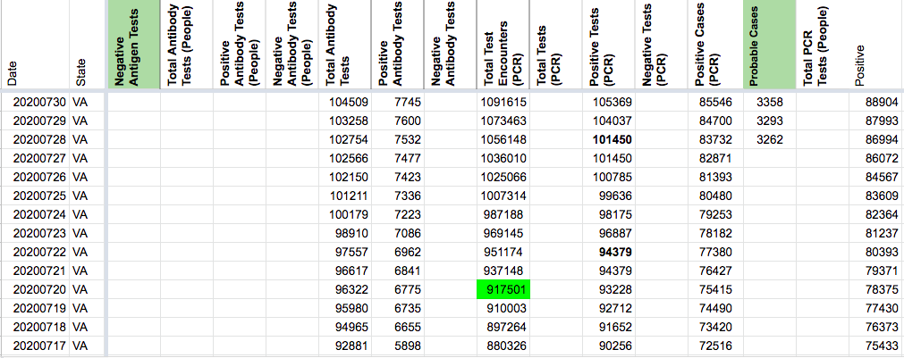
AFTER:
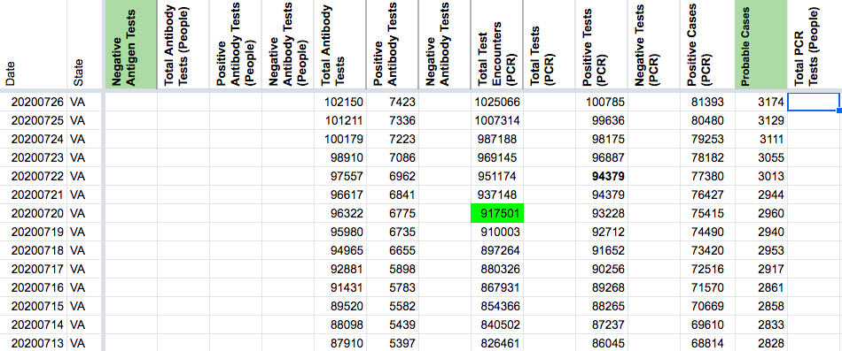
DC'd by DZL 9/24 13:16
#840: [VA] backfill Anitbody positives (we already capture totals from same source)
Issue number 840
space-buzzer opened this issue on September 16, 2020, 11:45 AM PDT
Labels Data quality
We can backfill antibody positives from the same data source that's used for PCR total and positives and antibody totals
Comments
States Daily before and after the update: Added data from our daily logs going back to 15-08-2020, and then backfilled from the state data source, as downloaded on 16-08-2020 (with data to the 15th) all the way back to 07-04-2020
va_post_20200916[DataStore]Coronavirus numbers by state - [Raw]StatesDaily.csv.txt va_pre_20200916[DataStore]Coronavirus numbers by state - [Raw]StatesDaily.csv.txt
#790: [VA] Test Encounters backfill
Issue number 790
space-buzzer opened this issue on August 25, 2020, 12:23 PM PDT
Labels Backfill Data quality
VA has a full time series of test encounters but we started collecting it beginning of May.
Need to backfill, need to decide how to backfill
Comments
Updated PCR test encounters and PCR positive tests: Backfilled test encounters ad positive tests from the "Tests_by-LabReportDate" dataset, as captured on 2020-07-20 Between 20-7-2020 and today, positive PCR tests were filled from their respective daily sums as show on the dashboard and the "Tests_by-LabReportDate" dataset (changes daily)
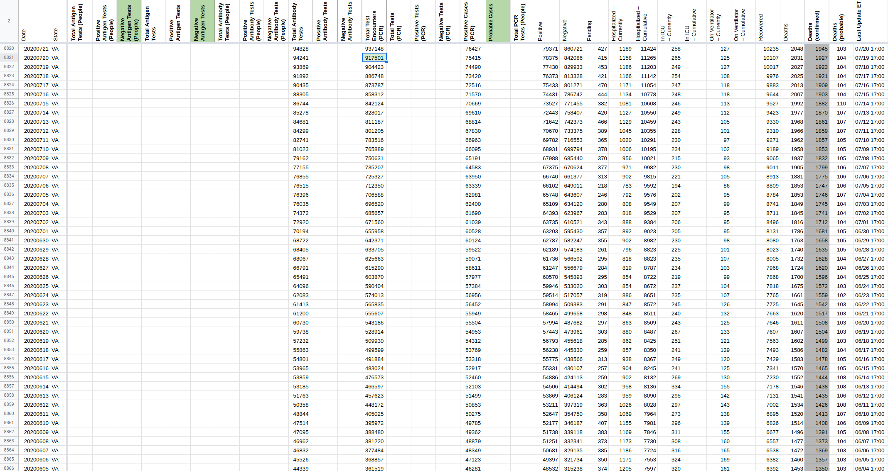 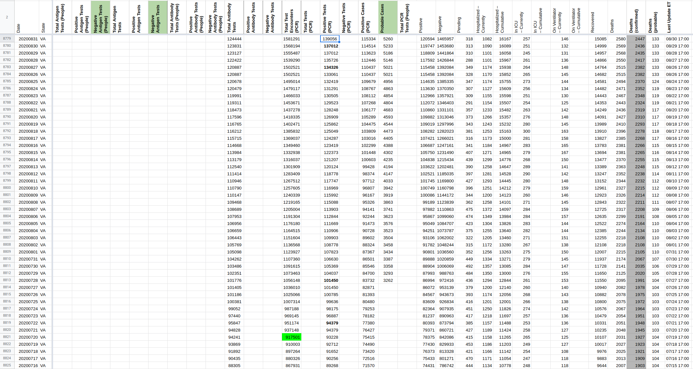
va_pre_20200831[DataStore]Coronavirus numbers by state - [Raw]StatesDaily.csv.txt va_post_20200831[DataStore]Coronavirus numbers by state - [Raw]StatesDaily.csv.txt
#757: [VA]Switch VA's total test numbers from `Total Tests (PCR)` column to `Total Tests Encounters (PCR)` column
Issue number 757
muamichali opened this issue on August 12, 2020, 6:27 PM PDT
Labels Data quality
State or US: Virgina
Describe the problem
Starting in early May, Virginia has been reporting their tests in units of test encounters. CTP has been capturing this data in the Total Tests (PCR) column. CTP now added a column to capture tests reported in test encounters units so we are moving the data to the correct column.
Link to data source https://www.vdh.virginia.gov/coronavirus/2020/05/07/how-is-vdh-calculating-the-number-of-people-tested/
Before

1283409 1267512 1257605 1240339 1219165 1205004 1191304 1176180 1164515 1151604 1136568 1123927 1107360 1091615 1073463 1056148 1036010 1025066 1007314 987188 969145 951174 937148 917501 904423 886748 873787 858312 842124 828017 811187 801205 783516 765889 750631 735207 725327 712350 706588 696520 685657 671560 655958 642371 633705 625663 615290 603870 590404 574013 565835 555607 543186 528914 509930 499599 491884 483024 476573 466597 457623 448172 405025 395972 388480 381220 377484 368857 361519 351354 340197 328889 322568 313283 303430 296321 285273 275074 265279 256913 242292 230683 223433 216890 210965 201183 194677 188874 184118 176635 185551 180084 171239 167758 157957 150952 143220 136558 127938 127938 122778 119065
Comments
#525: [VA] Deaths - PCL Historicals and WS2
Issue number 525
pscsharon opened this issue on June 25, 2020, 6:44 AM PDT
Labels PCL/SVP Historicals
Need to amend historical total-deaths, historical confirmed-deaths and historical probable-deaths on 5/13 and prior.
Confirmed-deaths missing or incorrect on 5/13 and prior (ex. on 5/2, we recorded 454 confirmed-deaths, but historical screenshot shows 572).
Note historical screenshots for VA from COVID Tracking Project external-facing website. https://covidtracking.com/data/state/virginia#historical Confirmed and probable began to be reported in the dashboard starting with the 4/21 12:19pm screen capture (not 6am one). Here is the first one where we see confirmed and probable called out. https://covidtracking.com/screenshots/VA/VA-20200421-121931.png
Comments
I updated the values based on screenshots.
BEFORE 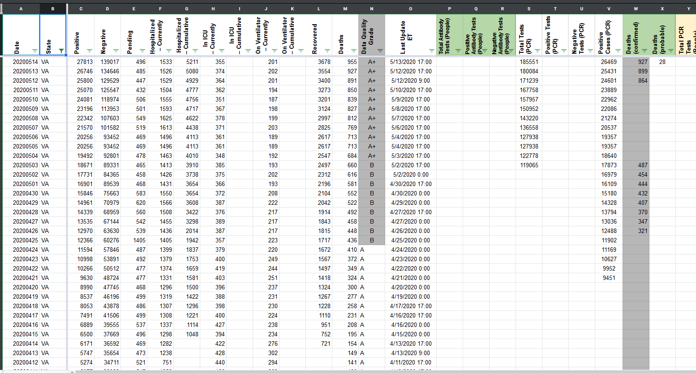
AFTER 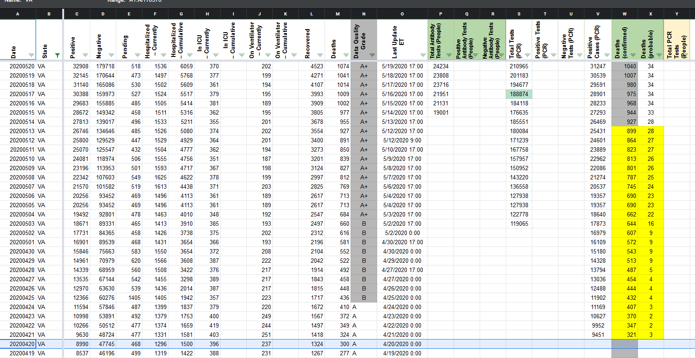
#351: [VA historical data] Using "Unique people tested" instead of "Total people tested" for negative calculations
Issue number 351
qpmnguyen opened this issue on May 3, 2020, 3:25 PM PDT
As per conversation today at the publish shift, yesterday's negative numbers do not fit our definition of "Negatives (people and cases)" as the "Total people tested" was used (due to confusing language). The new procedure now uses "Unique people tested" instead.
Previous number: VA [Negatives] : 95471 (=112450 - 16979)
Should be: VA[Negatives] : 84365 (=101344 - 16979)
Comments
Hi @quangnguyen1995 I updated the data. Please double check. Thanks :)
Before 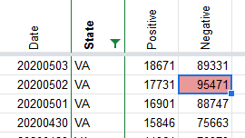
After 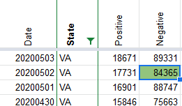
#288: [States Daily CSV] VA deathIncrease is negative for 2020-04-05
Issue number 288
acobolew opened this issue on April 24, 2020, 9:19 PM PDT
Labels not stale
Virginia positiveIncrease is negative for 2020-04-05:
library(data.table) covidtracking.dt <- fread('https://covidtracking.com/api/v1/states/daily.csv') covidtracking.dt[, date := as.Date(as.character(date), '%Y%m%d')] covidtracking.dt[order(date, decreasing=FALSE)][ , .(date, state, death, deathIncrease) ][deathIncrease < 0] date state death deathIncrease 1: 2020-04-05 VA 51 -1 2: 2020-04-07 DC 22 -2 3: 2020-04-22 AR 42 -1 4: 2020-04-23 PA 1421 -201 5: 2020-04-24 KS 111 -1 6: 2020-04-24 TN 168 -2
Comments
This issue has been automatically marked as stale because it has not had recent activity. It will be closed if no further activity occurs. Thank you for your contributions!
This issue has been closed because it was stale for 15 days, and there was no further activity on it for 10 days. You can feel free to re-open it if the issue is important, and label it as "not stale."
#266: VA data for 4/21 and 4/22 needs update
Issue number 266
nhinze opened this issue on April 23, 2020, 8:53 AM PDT
VA had some data reporting issues on 4/21 and 4/22. Data needs to be updated to the respective 6PM screenshots.
Comments
Thanks for reporting this issue @nhinze
We will update the data based on the screenshots. https://covidtracking.com/screenshots/VA/VA-20200421-181818.png https://covidtracking.com/screenshots/VA/VA-20200422-181901.png
Before 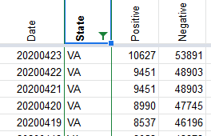
After 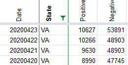
Note that the "Negative", "Total", "Death" and "Hospitalization" columns for those dates is also incorrect.
Thank you @nhinze
We have made the updates here, and it will be reflected on the site soon.
Before 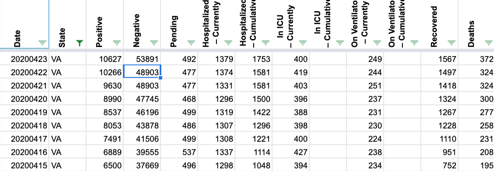
After
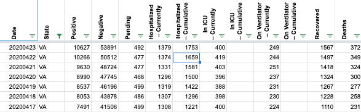
The Virginia Dept of Health's CSV (recently switched to https and alas has some certificate validation issues on some clients) has:
2020-04-22 | 10266
2020-04-23 | 10998
2020-04-24 | 11594
2020-04-25 | 12366
Why are the totals here different from the state?
Actually, the numbers are all off starting 4/23 now compared to the screenshots.
#190: Historicals for VA (4/11 & 4/12)
Issue number 190
qpmnguyen opened this issue on April 13, 2020, 6:31 AM PDT
Some issues with VA data for 4/12 and 4/11 so far as observed by the 4/13 morning data entry crew:
-
Guidelines for updating current hospitalizations have updated to include both pending and confirmed hospitalization cases (if the state reports it). However, the number from 4/12 seems to indicate that only hospitalization numbers from confirmed cases were reported. On 4/11, the number of hospitalizations was 1252, but, the next day it dropped to 751, which is closer to the number of current hospitalizations for cases only on the dashboard. Unfortunately this is only circumstantial evidence since no screenshots for the hospitalization dashboard were recorded.
-
The number of current ICU and ventilation were also added together for 4/11 and 4/12. However, ICU numbers already include those on ventilation, which means those numbers should be separate. Specifically, the numbers should be: 4/11 Curr. ICU: 426 | Curr. Vent: 283 4/12 Curr. ICU: 440 | Curr. Vent: 294 These numbers were inferred from the formula on the spreadsheet.
Additionally, is there any way we can add screenshots for this page (https://www.vhha.com/communications/virginia-hospital-covid-19-data-dashboard/)? We currently take hospitalization data from it.
Let me know if there are any issues 👍
Comments
This issue has been automatically marked as stale because it has not had recent activity. It will be closed if no further activity occurs. Thank you for your contributions!
Hi @quangnguyen1995
- We added the hospital dashboard as a secondary source now.
Alaska: Never reported negatives directly and always reported in specimens, removing total time series
Values Removed: Changes.txt